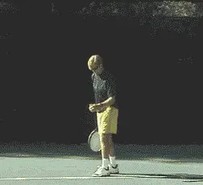
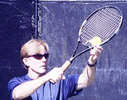
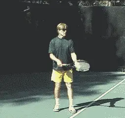
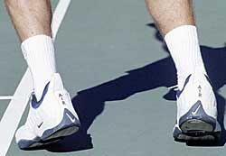
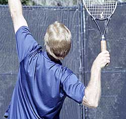
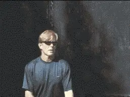

Private Lessons - The serve - P2¶
Private Lessons: The Serve -- Part 2¶
Scott Murphy¶
In Part 1 of this series, I started my analysis of the common issues I see working everyday with players at all levels. Part 2 continues the analysis beginning with the critical, but little understood, concept of rhythm.

Creating the \"calm before the storm\" increasing your chance of having a consistent serving rhythm.
A player who takes the time to create what I call a \"calm before the storm,\" has a much better chance of consistently hitting a rhythmical serve. To this end, everything you do prior to launching yourself to the point of contact should be done smoothly and calmly.
I see too many players start their service motions like they've got a train to catch! Typically, players who rush at the outset have inconsistent tosses and wind up either muscling the ball or dinking it.
It seems that servers who begin their motions with their hands above shoulder level are more often the ones who tend to \"rev up\" at the wrong time and create a \"storm before the calm.\" In other words, the higher you start the greater the potential for a faster motion that will destroy your rhythm. But, however your motion begins, you need to stay relaxed, learn to store your energy, and then let the \"storm\" happen when it should, in the launching phase.
![A person playing tennis Description automatically generated with medium

Starting with the hands too high is a likely cause of a rushed motion. This is a good, low ready position, with the racquet supported with the tossing hand.
The first point in overcoming the tendency to rush is to use a ritual before serving. Align and set your feet, position yourself sideways to the net and bounce the ball a few times. Support the racquet with the tossing hand in the ready position to keep the hitting arm relaxed.
Now decide exactly what serve you are going to hit and where. Don't serve without a purpose! Without taking a long stare to give away your intent, draw a line in your mind's eye to the area you'd like the ball to land, take a deep breath and calmly begin your serve.

The knees flex down as the hands go up.
The Knee Bend
One of the most common problems I see with servers is the improper knee bend. Players will bend their knees at the wrong time, over bend them, or not bend them at all. Proper knee bend keeps the serve rhythmical and provides an effective launch to the ball. For someone who doesn't know better, it's very instinctive to bend the knees at the same time you drop your hands to begin the service motion.
This, however, is incorrect because it will invariably lead to straightening the legs too early, before the swing is ever made. This disrupts rhythm and eliminates any launch. It's not necessarily the depth of the knee bend--that varies with the individual. It's the timing.
My recommendation is to remain basically upright as you begin to serve. Keep extra curricular movement at a minimum!
There's a simple formula to time the knee bend. Flex the knees down as the hands are going up. The knee bend should be fullest just after you release the toss.

Lifting your heels increases knee bend and eliminates excessive movement.
Initially, this can be like patting your head while rubbing your stomach, but with concerted practice both on and away from the court, it will soon solidify.
Experiment to find out how much you can drop your weight naturally in the bending phase. Relax, let your weight fall, and don't force the bend because you saw how far down Pete Sampras can go.
This will maximize how much energy you store. [This energy in turn will then release naturally as you swing up to the ball]. This is the launching phase which is critical to generating power.
Another way to enhance the knee bend is to simultaneously lift your heels. You can bend your knees with your feet flat but you won't do it consistently, because it's simply not comfortable. In addition, with the heels up you truly \"lock down\" your feet eliminating any excessive movement.

**The pinpoint stance can lead not only to foot faults, but also the loss of power from the legs and body rotation.**
Not only will excessive movement create the potential for being off balance but it can lead to a real bone of contention with me, and that is foot faulting. I know a lot of players figure it's not a big deal, but the simple fact is that it's cheating. It's particularly disconcerting when the player doing the foot faulting is a serve and volleyer, because it gives the unfair advantage of getting to the net faster.
I think the players most susceptible to foot faulting are those using the \"pinpoint\" stance. This is where the back foot is drawn up towards the front foot before launching. Sometimes that back foot will touch or cross the baseline just as the knee flex occurs. We even see this at the pro level.
In any event, starting with a foot on the baseline or touching the baseline or the court in front of it before striking the ball is against the rules! I'm not sure you gain anything from this stance. In fact, you may actually lose leverage from the legs, and also, run the risk of rotating through the motion too soon. In my teaching I strive to eliminate this extra step.
If you add the knee bend to what I wrote about cocking the arm and racquet in part 1 of this lesson, the so called \"trophy position\" is complete. Note the angle of the shoulders. Tilting the shoulders is important because it allows for a better stretch of the body and encourages swinging up.

Note the tilt in the shoulder position, about 45 degrees to the court.
Imagine swinging upward to the ceiling rather than forward to the wall. Swinging to the wall is, in essence, like pitching a ball, where the shoulders remain on a level plane and the arm is bent at the release point. When serving, the throw of the racquet is based on a tilted shoulder position with the elbow driven up as the arm goes to full extension.
These differences and images are very important to note.
If the timing of the knee bend is correct and the player swings to the \"ceiling,\" all your stored energy will be released and the launch will just happen.
The Weight Transfer
Lastly, some thoughts about weight transfer. I see too many people not transfer their weight at all, and in some cases actually go backwards, in large part because they don't set up the lower body correctly or they toss too far back to get any forward momentum.

The motion of the racquet should be upward toward the \"ceiling,\" not forward toward the \"wall.\"
There are essentially two kinds of weight transfers: thrust and crossover.
Thrust footwork is what you currently see all the pros doing. Once you flex those knees they will need to extend and depending on the extent of the knee bend this can result in something from a mild to a sizeable jump.
Immediately after the ball is struck the front foot lands in front of the baseline, the back leg kicks back and then quickly comes forward to stabilize and or propel you forward.
It's important to note that the jump is purely incidental and results from the upward thrust of the legs pushing off the ground.
When using the more traditional crossover footwork, the front foot remains stationary during and after striking the ball and then the back leg swings around into the court. Be sure, however, to not hit off of a flat front foot.
|  |
| Pete Sampras demonstrates the thrust, landing on the front foot with the back foot kicking back. |
I recommend this traditional footwork for the novice server, as it's simpler. [[But as soon as the other elements in the motion are solid, every player should begin to develop the thrust.] [It's one of the few things that every player can really learn to do like the top pros.]]
That concludes the second part on the serve. But one final note. If you don't love to serve you should work on it until you do!
Developing a sound service motion improves your athleticism and can give you the confidence to take charge of a match. It's well worth the effort!
Scott Murphy is from Marin County, California where he started playing tennis at age 5 in a family of tennis nuts. Both of his parents were major influences in his development. He also took lessons from Marin legend Hal Wagner and former top 10, Harry Roach. Scott is a graduate of the University of California at Berkeley where he played baseball and football but continued to work on his tennis game with renowned coach Chet Murphy. He was the head pro at San Domenico/Sleepy Hollow Tennis Club for over 20 years. He also directed the Nike Tahoe Tennis Camp at the Granlibakken Resort for 10 years. Scott now teaches privately in Ross, Marin County and in the summer he directs the Tuscan Tennis Academy which he founded in Quarrata, Italy.
Check out Scott's website at scottmurphytennis.net
You can contact Scott directly at: scottmrph@yahoo.com